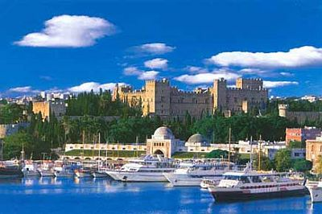

A Világjáró Utazási Iroda

akciós ajánlatai:

Athén
Athén Görögország, valamint a görög Attika prefektúra fővárosa. A modern Athén hatalmas város, az ókorban városállamként nagy hatalommal bírt. Nevét az ősi görög mitológia városvédő istennőjéről, Pallasz Athéné-ről kapta.
| Egy hét repülővel | 45 000 Ft/fő |
| Két hét repülővel | 80 000 Ft/fő |
| Egy hét autóbusszal | 35 000 Ft/fő |

Rodosz
Rodosz városa Rodosz szigetének északi csücskén helyezkedik el. A több kultúra emlékét hordozó óváros rendkívül jó állapotban maradt fenn. Az ókori város akropolisza a várostól kb. 2 km távolságra található.
| Egy hét repülővel | 63 000 Ft/fő |
| Két hét repülővel | 100 000 Ft/fő |
| Két hét autóbusszal, komppal | 95 000 Ft/fő |
Az árak az illetékeket nem tartalmazzák!